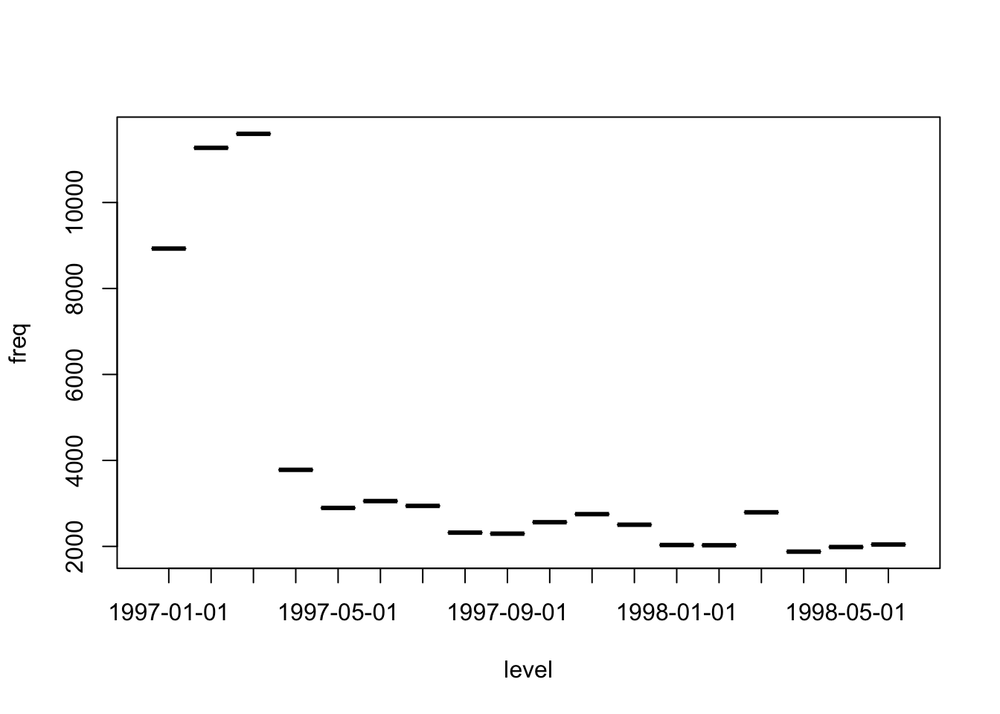

CLV定义
客户生命周期价值（CLV，Customer Lifetime Value）是运营中，以尽一切可能延长用户的生命周期，并且在生命周期中尽一切可能产生商业价值为目标的考察指标。CLV是基于认为客户具有新增期、成长期、成熟期、衰退期、流失期等不同期间的客户生命周期（CLT）理论抽象和量化的结果。
具体而言，本文通过使用基于新近度 Recency, 消费频次 Frequency, 和 消费金额 Monetary 构成的Logistic回归模型，预测每个未来采购周期时间内客户的留存率，进而计算客户的CLV。
本文主要受到Customer Lifetime Value (CLV) 和Calculating Customer Lifetime Value (CLV) with Recency, Frequency, and Monetary (RFM)两篇文章启发，对计算过程以data.table的方式进行重写，来展现R在CLV计算的可能性和方法。
数据介绍和处理
本文使用数据时来源于CDNOW，该数据集包含CDNOW自1997年第一季度至1998年6月底23,570名个人组成的全部购买历史。
这里Notes on the CDNOW Master Data Set 有更为具体的数据来源和内容情况说明。
数据导入
library(data.table)
library(anytime)
library(kableExtra)
dt <- fread("~/Desktop/NeuerArbeit/CDNOW_master.txt")
setnames(dt,c("id","date","numberOfBuying","amount"))
dt <- dt[,date := anydate(date)]
knitr::kable(dt[sample(.N,6)])| id | date | numberOfBuying | amount |
|---|---|---|---|
| 15213 | 1997-02-24 | 6 | 112.43 |
| 16658 | 1997-06-11 | 2 | 26.73 |
| 21768 | 1998-06-16 | 5 | 58.62 |
| 1719 | 1997-08-07 | 1 | 12.79 |
| 12845 | 1997-03-26 | 3 | 43.30 |
| 14376 | 1997-05-21 | 2 | 23.54 |
各变量情况
library(DescTools)
plot(Desc(dt$date)[[1]][["freq"]][,1:2]) 主要的交易发生在97年1月~97年4月间。
Desc(dt$amount)## -------------------------------------------------------------------------
## dt$amount (numeric)
##
## length n NAs unique 0s mean meanCI
## 69'659 69'659 0 8'209 80 35.894 35.624
## 100.0% 0.0% 0.1% 36.163
##
## .05 .10 .25 median .75 .90 .95
## 9.990 11.770 14.490 25.980 43.700 71.450 96.601
##
## range sd vcoef mad IQR skew kurt
## 1'286.010 36.282 1.011 17.969 29.210 5.655 83.888
##
## lowest : 0.0 (80), 1.63, 1.98, 2.49 (3), 2.66 (2)
## highest: 915.1, 932.23, 1'028.510, 1'119.680, 1'286.010平均消费35元，但中值25元，说明存在明显的极大值拉升了整体平均消费金额，但超过半数的消费者仍然是在25元以下的消费额。
模型搭建
数据准备
####################数据准备函数
require(data.table)
getDataFrame <- function(dt,startDate,endDate,id="id",date="date",amount="amount"){
newdt <- setDT(dt)[date >= startDate & date <= endDate,][order(-date)]
#选取每个人最近的交易时间
dateRecency <- newdt[,Recency:= endDate - date][newdt[, .I[Recency == min(Recency)],
by = id]$V1][,c(1:2,5)]
dateRecency <- unique(dateRecency)
#汇总每个人的交易次数
newdt <- newdt[,.(Frequency= .N,Monetary = sum(amount)), by = id]
#合并最终数据
newdt <- dateRecency[newdt,on = id]
return(newdt)
} 执行数据转换：
# 设置历史时间段
startDate_history <- as.Date("1997-01-01")
endDate_history <- as.Date("1998-02-28")
# 设置预测时间段
startDate_forcast <- as.Date("1998-03-01")
endDate_forcast <- as.Date("1998-04-30")
## 历史数据转制
history <- getDataFrame(dt,startDate_history,endDate_history)
## 预测数据转制
forcast <- getDataFrame(dt,startDate_forcast,endDate_forcast)
# 将购买周期设定为60天/每周期，以便将Recency离散化
history <- history[,Recency:= as.numeric(Recency)][,Recency := Recency%/% 60]
# 将用户消费金额Monetary以$10的方式离散化
breaks<-seq(0,round(max(history$Monetary)+9),by=10)
history <- history[,Monetary := as.numeric(cut(Monetary,breaks,labels=FALSE))]
#为RFM模型添加一个是否购买的字段
history <- history[,Buy:= ifelse(id %in% forcast$id,1,0)]
train<-historyRFM各项指数情况
####################RFM购买概率函数
require(data.table)
getPercentages <- function(dt,colNames){
Var<-c(colNames,"Buy")
a <- dt[,..Var]
a <- a[,.(account = .N),by = Var][,Percentage := prop.table(account), by = colNames]
b <- a[Buy == 1, -3][,-2]
return(b)
}新近度 Recency
# 基于Recency的购买概率
colNames<-c("Recency")
p<-getPercentages(train,colNames)
# get the Buy ~ Recency model
r.glm=glm(Percentage~Recency,family=quasibinomial(link='logit'),data=p)
p_r<-p
plot(p_r$Recency,p_r$Percentage*100,xlab="新近度",ylab="购买概率(%)",
family = "思源宋体 CN")
lines(lowess(p_r$Recency,p_r$Percentage*100),col="blue",lty=2)消费频次 Frequency
# 基于Recency的购买概率
colNames<-c("Frequency")
p<-getPercentages(train,colNames)
# get the Buy ~ Frequency model
f.glm=glm(Percentage~Frequency,family=quasibinomial(link='logit'),data=p)
p_f<-p
plot(p_f$Frequency,p_f$Percentage*100,xlab="消费频次",ylab="购买概率(%)",
family = "思源宋体 CN")
lines(lowess(p_f$Frequency,p_f$Percentage*100),col="blue",lty=2)Desc(train$Frequency)## -------------------------------------------------------------------------
## train$Frequency (integer)
##
## length n NAs unique 0s mean meanCI
## 23'570 23'570 0 57 0 2.59 2.54
## 100.0% 0.0% 0.0% 2.63
##
## .05 .10 .25 median .75 .90 .95
## 1.00 1.00 1.00 1.00 3.00 5.00 8.00
##
## range sd vcoef mad IQR skew kurt
## 161.00 3.78 1.46 0.00 2.00 12.87 365.53
##
## lowest : 1 (12'530), 2 (4'329), 3 (2'236), 4 (1'309), 5 (908)
## highest: 96, 99, 106, 155, 162消费金额 Monetary
# 基于Recency的购买概率
colNames<-c("Monetary")
p<-getPercentages(train,colNames)
# get the Buy ~ Frequency model
m.glm=glm(Percentage~Monetary,family=quasibinomial(link='logit'),data=p)
p_m<-p
plot(p_m$Monetary,p_m$Percentage*100,xlab="消费金额",ylab="购买概率(%)",
family = "思源宋体 CN")
lines(lowess(p_m$Monetary,p_m$Percentage*100),col="blue",lty=2)CLV函数
![]()
具体的CLV函数构成
r, 新近度时段, 本例: r=0
f, 消费频次,本例: f=1
m, 人均客户利润
n, 近期同类消费频次和时间的人数
cost, 每个购买期间对每个将来潜在客户是否购买的成本
periods, 客户流失前停留时间段
dr, 折扣力度
pModel, 基于最近消费时段、频次或金额的购买概率预测模型
历史值获得的clv预测模型：
model<-glm(Buy~Recency+Frequency,family=quasibinomial(link='logit'),data=train)
pred<-predict(model,data.frame(Recency=c(0),Frequency=c(1)),type='response')####################RFM购买概率函数
getCLV<-function(r,f,m,n,cost,periods,dr,pModel){
df<-data.frame(period=c(0),r=c(r),f=c(f),n=c(n),value=c(0))
for(i in 1:periods){
backstep<-df[df$period==i-1,]
nrow<-nrow(backstep)
for(j in 1:nrow){
r<-backstep[j,]$r
f<-backstep[j,]$f
n<-backstep[j,]$n
p<-predict(pModel,data.frame(Recency=r,Frequency=f),type='response')[1]
buyers<-n*p
df<-rbind(df,c(i,0,f+1,buyers,buyers*(m-cost) / (1+dr)^i))
df<-rbind(df,c(i,r+1,f,n-buyers,(n-buyers)*(-cost) / (1+dr)^i ))
}
}
return(sum(df$value))
}
## 此处以R=0,F=2,平均利润 m=100,折扣率 dr=0.02 , 停留期间 periods = 3 来示范CLV值
v<-getCLV(0,2,100,1,0,3,0.02,model)
v## [1] 72.34831